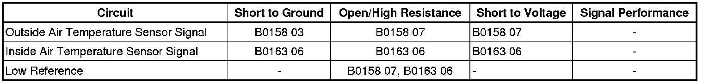

B0163
DTC B0158 or B0163
Diagnostic Instructions
* Perform the Diagnostic System Check - Vehicle (Initial Inspection and Diagnostic Overview) prior to using this diagnostic procedure.
* Review Strategy Based Diagnosis (Initial Inspection and Diagnostic Overview) for an overview of the diagnostic approach.
* Diagnostic Procedure Instructions (Initial Inspection and Diagnostic Overview)provides an overview of each diagnostic category.
DTC Descriptors
DTC B0158 03
- Outside Air Temperature Sensor Voltage Below Thershold
DTC B0158 07
- Outside Air Temperature Sensor Voltage Above Thershold
DTC B0163 06
- Passenger Compartment Temp Sensor Circuit Short to Ground or Open
Diagnostic Fault Information

Circuit/System Description
The HVAC control module monitors the air temperature sensors with a low reference circuit and 5-volt signal circuit. The HVAC control module monitors the voltage drop across the sensor, which is proportional to temperature. When the ambient air temperatures are cold, the resistance of the sensor is high and the voltage signals are high. When the ambient air temperatures are hot, the resistance of the sensors is low and the voltage signals are low.
Conditions for Running the DTC
The ignition is turned ON.
Conditions for Setting the DTC
* The HVAC control module detects the sensor signal circuit is less than -35°C (-39°F).
* The HVAC control module detects the sensor signal circuit is greater than 85°C (185°F) .
Action Taken When the DTC Sets
The HVAC control module uses a default air temperature value for further automatic control calculations. The default values are not displayed on the scan tool.
Conditions for Clearing the DTC
* The DTC will become history if the HVAC control module no longer detects a failure.
* The history DTC will clear after 100 fault-free ignition cycles.
Reference Information
Schematic Reference
HVAC Schematics (Electrical Diagrams)
Connector End View Reference
Component Connector End Views (Connector Views)
Description and Operation
Automatic HVAC Description and Operation (Automatic HVAC Description and Operation (Part 1))
Electrical Information Reference
* Circuit Testing (Component Tests and General Diagnostics)
* Connector Repairs (Component Tests and General Diagnostics)
* Testing for Intermittent Conditions and Poor Connections (Component Tests and General Diagnostics)
* Wiring Repairs (Component Tests and General Diagnostics)
Scan Tool Reference
Control Module References (Programming and Relearning)
Circuit/System Verification
Ignition ON, observe the ambient air temperature sensor. The reading should be between -35°C (-39°F) and 85°C (185°F) and change with ambient air temperature changes.
Circuit/System Testing
1. Ignition OFF, disconnect the harness connector at the ambient air temp sensor.
2. Ignition OFF, test for less than 10 ohms of resistance between the low reference circuit terminal B and ground.
• If greater than the specified range, test the low reference circuit for an open/high resistance. If the circuit tests normal, replace the HVAC control module.
3. Ignition ON, verify the scan tool Ambient Air Temp Sensor parameter is less than -35°C (-39°F).
• If greater than the specified range, test the signal circuit terminal A for a short to ground. If the circuit tests normal, replace the HVAC control module.
4. Install a 3 A fused jumper wire between the signal circuit terminal A and the low reference circuit terminal B. Verify the scan tool Ambient Air Temp Sensor Raw parameter is greater than 85°C (185°F).
• If less than the specified range, test the signal circuit for a short to voltage or an open/high resistance. If the circuit tests normal, replace the HVAC control module.
5. If all circuits test normal, test or replace the ambient air temp sensor.
Component Testing
1. A thermometer can be used to test the sensor off the vehicle in warn and or cold water. Sensor Resistance Table (Electrical Specifications) for this test.
2. Test the ambient air temperature sensor by varying the sensor temperature while monitoring the sensor resistance.
3. Compare the readings with the Temperature VS Resistance table and verify that the resistance is within 5 percent of the specification.
• If not within the specified range, replace the sensor.
Repair Instructions
Perform the Diagnostic Repair Verification (Verification Tests) after completing the diagnostic procedure.
* Ambient Air Temperature Sensor Replacement (Service and Repair)
* Inside Air Temperature Sensor Replacement (Left Hand Drive) (Inside Air Temperature Sensor Replacement (Left Hand Drive))Inside Air Temperature Sensor Replacement (Right Hand Drive) (Inside Air Temperature Sensor Replacement (Right Hand Drive))
* Control Module References (Programming and Relearning)for HVAC control module replacement, setup, and programming